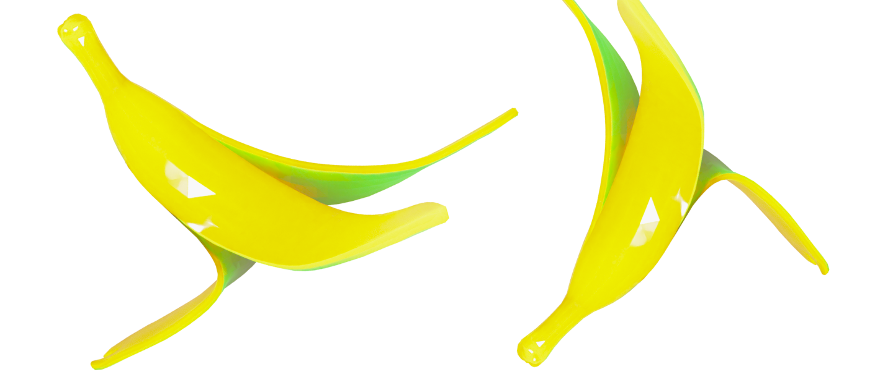
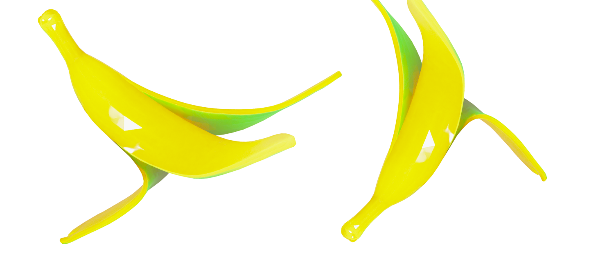

Конверсия
пищевых
отходов
пищевых
отходов
 

Факты:
Название
Пищевые отходы
Возможность переработки
Да
Использование
Корм и биогаз
Важно!
*Пищевые отходы являются одной из главных причин загрязнения
окружающей среды, так как они выделяют метан.
Пищевые отходы
В нашей жизни пищевые отходы являются серьезной проблемой,
которую необходимо решать. Каждый день мы выбрасываем
в мусорную корзину остатки еды, которые могут быть переработаны
и использованы в разных целях.
Что с ними делать?
Одним из способов утилизации пищевых отходов является
компостирование. Этот процесс позволяет превратить остатки пищи
в удобрение для растений.
Пищевые отходы можно использовать для производства биогаза,
который может заменить традиционные источники энергии.
Еще одним способом утилизации является переработка остатков пищи
в корм для животных.
МЫ В СОЦ СЕТЯХ